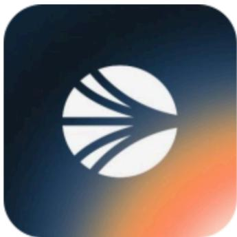
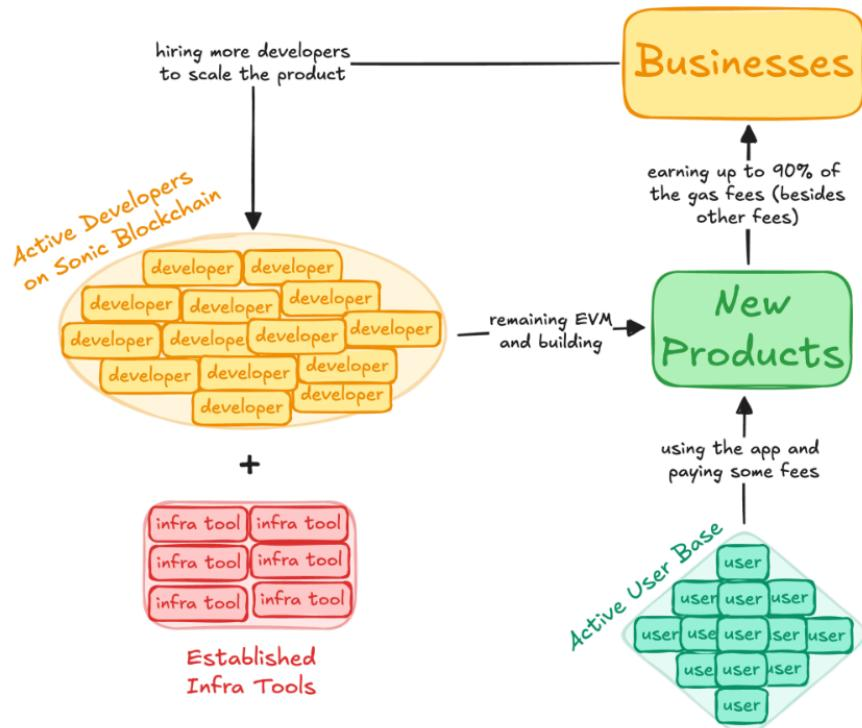
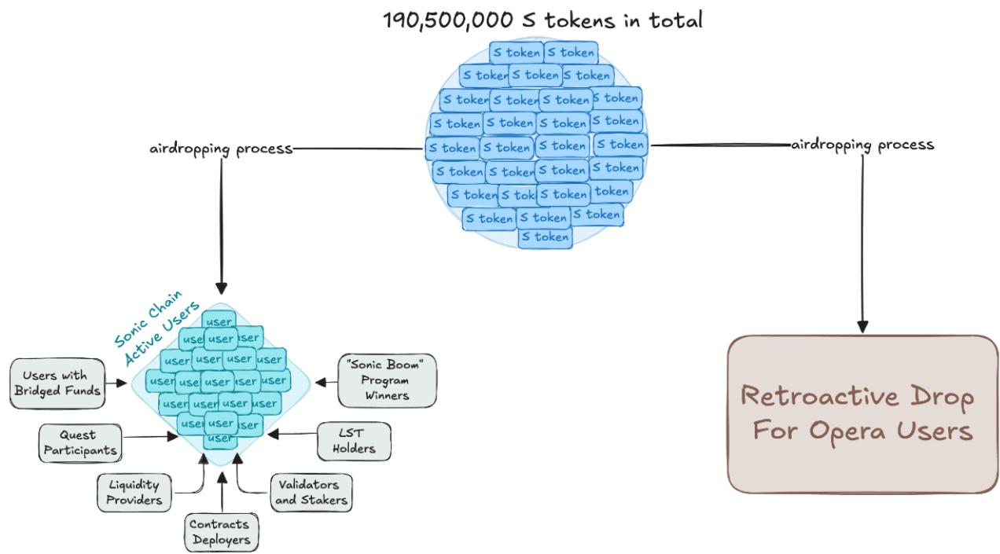
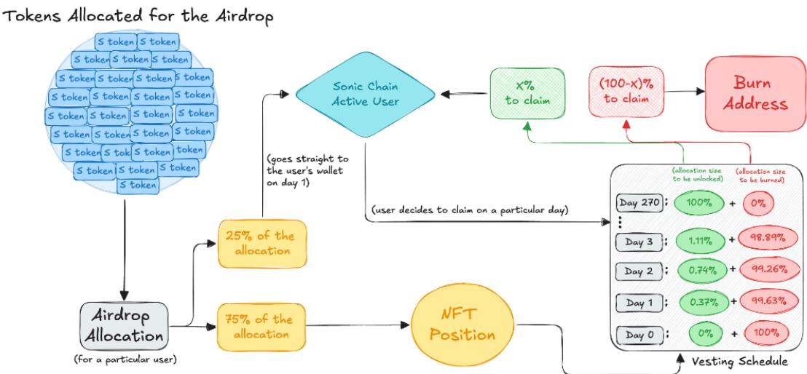
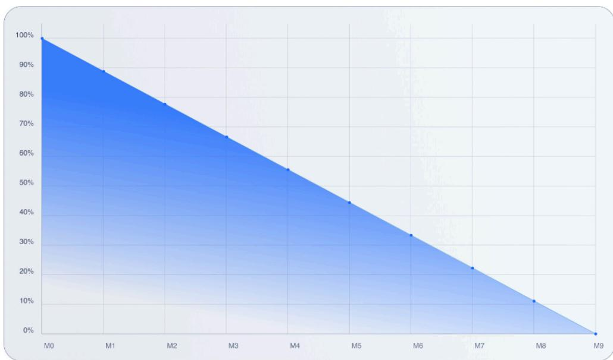
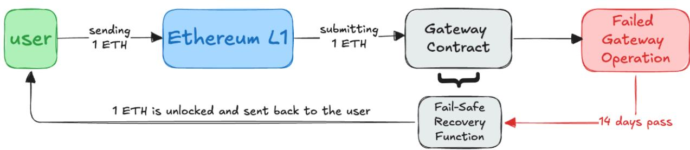
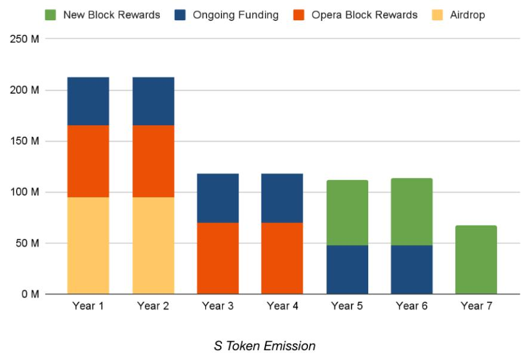

2025/8/4 21:20

解锁下一代区块链的速度、安全性和用例
作者：Sonic Labs 2024年10月14日
S代币持有者负责其代币的保管和安全，包括私钥管理和钱包访问凭据的管理。Sonic Labs不提供托管服务，对于因用户错误、未经授权访问或未能维护安全存储而导致的S代币丢失或被盗，Sonic Labs不承担责任。S代币不代表对Sonic Labs资产、利润或收入的任何权利要求，也不授予对Sonic Labs或任何关联实体的所有权、股息权利或利润参与权。持有或使用S代币不会在Sonic Labs与持有者之间建立债务-债权人或类似关系。
S代币将通过空投、交易所上市、DeFi和其他分发计划的组合机制向公众提供。S代币的价格将由市场力量决定，除非代币免费分发（例如通过空投活动）。任何代币销售或相关活动的收益将用于资助Sonic区块链的开发、支持生态系统计划、发展开发者社区，并支付运营和合规成本。
购买、持有和使用S代币涉及重大风险。这些风险包括但不限于：S代币价格的波动性、各司法管辖区对S代币法律待遇的监管不确定性、技术风险如Sonic区块链代码或基础设施中的潜在缺陷、漏洞或故障、因用户错误导致的代币访问丢失（例如私钥丢失），以及市场风险包括S代币的低流动性或需求不足。潜在持有者应仔细评估这些风险，并在获得S代币之前寻求适当的独立专业建议。希望就S代币或Sonic区块链提出关切或投诉的代币持有者和/或用户可以联系Sonic Labs，邮箱：support@soniclabs.com。投诉将按照Sonic Labs的内部程序处理，目标是在收到投诉后30天内提供回复。
Sonic Operations Ltd.（"Sonic Labs"）是促进S代币发行和支持Sonic区块链开发的实体。Sonic网络是去中心化的，由全球分布的独立验证者保护，没有单一运营商控制网络共识或区块生产。Sonic Labs根据开曼群岛法律注册为豁免公司，注册地址为c/o Stuarts Corporate Services Ltd., P.O. Box 2510, Kensington House, 69 Dr. Roy's Drive, Grand Cayman, KY1-1104, Cayman Islands。Sonic Labs为网络开发、生态系统增长和合规支持做出贡献。更多信息可在https://www.soniclabs.com/获取，查询可发送至legal@soniclabs.com。
本加密资产文件未经欧盟任何成员国的主管当局批准。S代币不享有欧盟存款担保计划或投资者补偿计划的保护。您应该意识到您可能会损失所有投资资金。本白皮书旨在为潜在持有者提供全面信息，并用于欧盟内交易准入目的，但不构成Sonic Operations Ltd.以固定要约价格或认购期公开要约（销售）S代币。
摘要
简介
商业案例和初始目标
激励机制
Sonic Labs创新者基金 7 空投计划 7 费用货币化 10 Sonic流动性质押代币（LSTs） 10
技术
Sonic网关 11 Sonic数据库 13 Sonic虚拟机 13
代币经济学
空投计划 14 持续资金 14 区块奖励 15 代币销毁 16
结论
在不断发展的区块链格局中，什么真正让一个网络与无数其他消失的网络区分开来？对于Sonic，我们相信关键在于提供独特的产品和功能，使开发者能够比在任何其他链上更具竞争力地构建应用程序。我们的重点是通过增加开发者的收入、授予他们对网络费用定价的控制权，以及简化用户支付选项，为开发者提供切实的价值，所有这些都具备亚秒级最终性。
然而，许多现有平台未能充分解决这些以开发者为中心的需求。以太坊通过乐观和零知识汇总专注于可扩展性，现在在其第2层（L2）网络中锁定了超过340亿美元¹。这种向L2解决方案的转变无意中强调了通过集中式排序器费用提取价值，而不是培养高质量的应用程序开发。旨在通过汇总部署推动更高估值和费用的激励结构使L2商品化，优先考虑排序器收入而非安全性和去中心化。
这种趋势造成了不平衡：排序器不成比例地受益，而开发者仍然报酬不足。因此，创新消费者应用程序的采用停滞不前，限制了它们对市场的重大影响潜力。
认识到这些挑战，我们推出了Sonic——一个重新定义开发者激励模式的第1层（L1）区块链平台。Sonic的费用货币化计划允许开发者赚取其应用程序产生的费用的90%。通过动态费用、费用补贴和原生账户抽象等功能，Sonic提供了灵活的工具来增强用户体验并促进采用。
随着传统L1链面临关键时刻——进化或面临无关紧要的风险——Sonic通过提供前所未有的可扩展性、去中心化和近即时速度引领转型。结合L1和L2模型的优势，Sonic提供每秒40万笔交易、亚秒级最终性，以及通往以太坊及更远地方的原生安全桥接，以增强流动性和安全性。
通过将尖端技术与革命性的以开发者为中心的模型相结合，Sonic旨在重新定义区块链格局，重新激发对生产性面向消费者应用程序的关注，并赋能建设者创建盈利的链上业务。
本白皮书介绍了Sonic，我们的L1网络，为数字资产提供最快的结算层，原生代币转账每秒40万笔交易，具备亚秒级最终性，同时通过Sonic网关连接到以太坊的流动性。
除了这一技术飞跃，我们正在彻底改变应用程序激励结构，使Sonic成为唯一一个开发者真正优先的L1，通过我们独特的费用货币化计划，开发者可以赚取其应用程序产生的所有费用的90%。此外，我们将支持动态费用功能、费用补贴和账户抽象。
Sonic是独特的，因为该链由Fantom Opera背后的同一团队构建，该链在四年多的时间里证明了其韧性，正常运行时间超过99.9%，在其峰值时支持超过140亿美元的总锁定价值²。
作为去中心化的权益证明第1层网络，我们主要提供由费用支持的分布式计算能力。然而，行业内当前的不良激励结构导致根本上生产性的应用程序和网络收入被边缘化，有利于短期寄生和提取性货币化，导致增长和动力的下降。
因此，我们的成功衡量标准来自一个简单的计算，检查网络收入是否高于激励验证者的总成本：
[成功 = (交易 × 每笔交易成本) - 激励验证者的总成本]
我们通过支持开发者和公司构建需要向网络写入以获取费用的消费者或企业对企业（B2B）应用程序来创造对这些交易的需求。Sonic的目标是推动需求，利用我们网络能够有效提供的最大交易量，而不会造成中断，同时对每笔交易收取足够的费用来覆盖网络的排放率。
我们的网络可以舒适地每天最终确定高达9亿笔ERC-20转账³，具备亚秒级TTF。这种供应侧容量远远超过当前需求。例如，所有L2加起来每天处理约1200万笔交易，峰值约为1700万笔。
Solana最近的显著峰值是每天4000万笔交易⁴。即使将这些峰值加起来，每天总计约5700万笔交易，这只是我们阈值的一小部分。
凭借丰富的区块空间和交易容量，我们的重点转向构建这种需求。在一个网络上实现比整个行业目前处理的更多需求需要大胆的举措，例如：
所有这些都将与为我们的开发者基础部署AAA级基础设施合作伙伴一起完成，包括Chainlink、Pyth、Dune、Alchemy、Safe等。

与PayPal早期类似，Peter Thiel通过向用户支付10美元注册费和推荐朋友费用大量投资用户获取，我们旨在通过显著的前期增长支出来达到我们自己的临界质量。
Sonic Labs国库将资助创新者计划等举措，最多2亿S代币，以加速应用程序立即采用Sonic链并支持新的创新企业。我们的1.905亿S空投活动将给Sonic开发者一个通过激励应用程序使用来吸引更多用户的机会。此外，我们正在快速简化我们的流动性质押代币（LST）市场，为我们的忠实代币持有者提供更多灵活性。
Sonic Labs创新者基金的资金直接来自Sonic Labs国库，包括高达2亿S代币。目前正用于为Sonic网络获取顶级基础设施集成，确保我们的建设者拥有在当今充满挑战的市场中茁壮成长的工具和能力。
我们正在积极与行业内的数十个应用程序和顶级基础设施提供商在以下领域合作：
链上工具 合规 原生资产 现实世界资产 桥接集成 托管解决方案 机构采用 交易所交易产品 钱包 子图 战略Web2合作伙伴 以及更多
迄今为止公开获得的基础设施集成包括Chainlink、Dune、Safe、Pyth、Alchemy、Redstone、Tenderly等。
我们计划空投1.905亿S代币，以激励Opera和新Sonic链上的用户和开发者活动。
我们空投的第一个主要组成部分是我们的Sonic Boom计划，该计划为30个获奖项目提供Sonic Gems分配——我们空投的积分——作为在各类别开发创新应用程序的奖励，这可以帮助启动Sonic上的DeFi生态系统并启动采用的飞轮效应。
项目可以将这些Gems分发给用户作为使用其应用程序的奖励，通过激励使用来帮助他们维持用户活动。我们旨在发现有前途的团队，并为他们提供在DeFi、游戏、AI等领域创建成功应用程序所需的工具。我们的空投重点是赋能我们的开发者基础达到他们自己的临界质量，这样我们就可以在他们扩展业务时继续支持他们的增长。

我们设计了一个通缩性空投系统，具有独特的线性衰减机制，引入博弈论来解决活跃链上空投激励的挑战性本质。具体而言，这个空投需要战略设计来最小化短期内流通供应的突然错位，我们相信线性衰减和销毁可以解决这个问题。
空投模型利用独特的销毁因子，鼓励接收者在等待他们偏好的退出销毁时增加链上活动。接收者可以等待其空投头寸完全成熟，或者提前领取并承担销毁惩罚。对于那些选择这两种选择都不做的用户，将有一个市场来交易他们的S空投分配给投机买家。

在空投的第一天，用户S代币空投分配的25%将是流动的，而剩余的75%将在9个月（270天）内作为ERC-1155 NFT头寸归属。Sonic用户可以立即领取这25%的部分，并灵活决定何时以相应的销毁率领取他们的最终分配。
选择持有其NFT但希望在二级市场上交易的用户可以自由这样做，在个人用户空投分配上创建投机市场，同时也对空投创建通缩压力。下图说明了如果用户在270天成熟期之前领取，他们将因销毁机制而损失的S代币数量。

费用货币化 Sonic上的费用货币化（FeeM）让建设者赚取其应用程序产生的网络费用的90%，创造可持续的收入流，而无需依赖融资。受YouTube等Web2模式的启发，FeeM奖励为其带来流量的开发者。
FeeM还通过允许建设者赚取其应用程序网络费用的90%而无需启动单独链来挑战剥削性的"应用链"模式。这种方法消除了通常与应用链相关的高成本、基础设施开销和互操作性挑战。
通过将货币化直接集成到网络层，FeeM简化了收入捕获，并支持在统一、开发者友好的生态系统内进行可扩展、高效的应用程序开发。
Sonic流动性质押代币（LSTs） Sonic的新质押机制将引入固定的14天锁定期和7天提款窗口。这为构建强大的流动性质押代币（LST）市场创造了可预测和高效的框架，使质押者能够保持资本效率，同时仍然支持网络安全。LSTs将在Sonic上解锁新的DeFi用例，从抵押贷款到收益策略等等。
Sonic链为开发者提供卓越的可扩展性和存储能力，同时提供快速无缝的用户体验。Sonic每秒可处理高达40万笔交易，具有亚秒级最终性，实现即时、不可逆的交易，并利用尖端的存储系统进行高效的数据管理。
与L2和以太坊不同，真正的最终性仅在一个区块内实现（无最长链规则），并且不需要将数据打包并写回以太坊。
Sonic区块链采用权益证明共识机制，旨在相对于工作量证明系统最小化环境影响。Sonic旨在通过促进高效的验证和网络运营来保持低碳足迹。Sonic的能源消耗和环境影响详细评估发布在soniclabs.com/environment，作为我们持续透明度承诺的一部分。
在不断发展的区块链格局中，原生、安全的桥接对于健康的生态系统至关重要，实现强大的互操作性并防止网络被孤立。然而，当前的第1层和第2层解决方案通常迫使用户在安全性和速度上妥协，依赖使资金面临重大风险的系统——由于桥接黑客攻击已经损失了超过25亿美元。
认识到这些系统性威胁，我们为我们的桥接设定了简单的目标：
安全性：通过内置故障安全机制确保安全
Sonic网关是我们的安全桥接，促进以太坊和Sonic之间的ERC-20代币转账。通过内置故障安全机制，Sonic网关提供资产安全，在所有情况下保护您的资金。
Sonic网关专为效率而设计。从以太坊到Sonic的转账只需最多10分钟，而从Sonic到以太坊的转账需要最多1小时（这些间隔被称为"心跳"）。虽然Sonic不是第2层，但我们仍将是以太坊生态系统的积极参与者，因为我们通过Sonic网关花费ETH向链写入。
用户可以选择使用"快速通道TX"立即执行交易。通过支付绕过标准心跳的交易——这通常会延迟目标链上的资金可用性——他们可以立即访问其资金。
快速通道交易将整个状态转移到目标链，就像常规心跳交易一样，使所有用户受益——不仅仅是提交它的用户。本质上，它等同于心跳交易但提前提交。重要的是，快速通道交易作为增强功能添加，不会改变标准心跳时间。
例如，如果从以太坊到Sonic的标准心跳间隔是10分钟，在下一个预定心跳前5分钟提交快速通道交易允许所有从以太坊桥接到Sonic的用户立即访问其资金，而下一个标准心跳仍有5分钟距离。
Sonic网关有一个内置的故障安全机制，在Sonic或其网关出现故障的极不可能情况下，用户可以在原始链上检索其桥接资产。
这个故障安全机制在连续14天网关操作失败后激活，作为从以太坊向Sonic转移资产的用户的保障。设计为一种保险形式，14天故障安全期是不可变的，意味着一旦Sonic网关部署，它不能被Sonic Labs或任何其他第三方实体更改。
重要的是，这个时期不是作为争议期，而是作为确保用户在发起链上保留其桥接资金保管的基本功能。
故障安全如何工作
故障安全如何工作 Sonic网关在链之间传输心跳，包括每个区块链的默克尔根和区块高度。如果心跳停止14天，它表示网关已失败，允许用户的资金在以太坊上解锁。

只有通过Sonic网关路由的资产才能被恢复。14天的持续时间作为缓冲期，在网关被认为不可用之前解决任何问题。
大多数第2层平台是乐观汇总，它们基于所有提款都有效除非被争议的假设运行（因此得名"乐观"）。为确保安全，存在7天的挑战期，允许任何人验证和争议在以太坊上提出的提款请求。
例如，如果您希望从Optimism提取2 ETH到任何其他平台，资产实际上不会在以太坊上释放，直到7天挑战期过去。那么为什么从Arbitrum和Optimism等平台到Binance等交易所的转账只需要几分钟？
当从乐观汇总向Binance等交易所存款时，转账可能看起来很快，但交易所承担与挑战期相关的风险；这是因为Binance信任大多数第2层平台。然而，交易所记入您账户的资金在技术上不安全，直到7天挑战窗口关闭，这意味着交易所在此期间承担风险。
相比之下，Sonic作为拥有自己安全验证者的第1层平台，向交易所提供即时（1区块）转账，没有相关风险，因为这些交易不受任何挑战期约束，如果USDC（和其他ERC-20代币）在Sonic上成为原生代币，也包括在内。
此外，通过Sonic网关从以太坊桥接的资产在一小时内最终确定，与大多数第2层解决方案所需的7天挑战期相比，提供了更快、更安全的替代方案。
Sonic使用数据库存储来存储其世界状态，包括账户信息、虚拟机字节码、智能合约存储等。这个数据库有一个称为实时修剪的功能，自动删除历史数据，随着区块链的增长减少验证者的存储需求。
以前，修剪要求验证者节点离线，给他们带来财务和运营风险。现在，验证者可以使用实时修剪而无需离线，确保连续运营，并通过实时丢弃历史数据节省磁盘空间和成本。
实时修剪通过将数据库分为两种类型工作：LiveDB和ArchiveDB。LiveDB仅包含当前区块的世界状态，而ArchiveDB包含所有历史区块的世界状态。验证者仅使用LiveDB，而存档节点同时拥有LiveDB和ArchiveDB，通过RPC接口处理历史数据请求。
Sonic的数据库存储使用高效的树状或分层结构，简化数据检索。重要的是，它仍然为世界状态提供加密签名，并使用前缀算法的增量版本提供存档功能。
此外，它使用原生磁盘格式，而不是通过LevelDB或PebbleDB等键值存储间接存储世界状态。
Sonic的虚拟机（VM）取代EVM并提高Sonic上的执行速度。对于我们的开发者社区，无需担心——VM完全兼容Solidity和Vyper，允许您继续使用相同的开发工具。此外，Sonic支持Geth 1.4。
VM使用动态翻译，其中代码在客户端内翻译成更高效的指令格式，允许更高效地执行智能合约。这是通过更高效的实现技术和"超级指令"实现的，超级指令是代码中频繁出现模式的高效表示。
S代币是Sonic的原生代币。它在网络内具有多种角色：
在Sonic启动时，总供应量等于31.75亿S。根据多个治理提案的决定，下面概述的添加将逐渐实施到S代币的代币经济学中。
在Sonic启动六个月后，将铸造额外的6%的31.75亿S，专门用于空投计划，奖励Fantom Opera和Sonic用户和建设者。空投具有创新的销毁机制，奖励积极参与并逐渐减少S代币的总供应量。
在Sonic启动六个月后，网络将铸造额外的S代币以：
增加S采用和全球存在 发展团队和扩大运营以推动增加采用 实施强大的营销举措和DeFi入职活动 启动Sonic Spark和Sonic University计划以推进Sonic的未来
为了资助这个计划，在启动六个月后，每年将铸造额外的1.5%的S初始总供应量（对应47,625,000代币），持续六年。
然而，为了防止通货膨胀，网络将销毁当年未使用的新铸造代币，确保该计划产生的所有新铸造代币的100%都分配给网络增长，而不是由国库持有供以后使用。
例如，如果Sonic Labs在第一年仅使用5,000,000代币，Sonic基金会将销毁剩余的42,625,000代币。
我们正在将验证者奖励从Fantom Opera迁移到Sonic。最初，Opera验证者计划在几年内继续获得奖励。然而，随着验证者和质押者向Sonic过渡，我们将减少他们的区块奖励。从这种减少中节省的资金将重新分配给奖励Sonic验证者。同时，Sonic基金会将在可预见的未来继续维护Opera验证者。
Sonic的目标年化百分比收益率（APR）为3.5%。为了在前四年维持这个比率而不造成通货膨胀，我们正在将Opera剩余的FTM区块奖励重新分配给Sonic，用于验证者和质押者奖励。这些奖励已经包含在31.75亿S代币的初始供应量中。
虽然S的初始总供应量在技术上为31.75亿以对应FTM的总供应量，但启动时的流通供应量将约为2,883,358,939代币。
差额——每年70,067,224代币——将在Sonic的前四年作为奖励分配给验证者。这种方法允许我们在这一时期避免为新铸造S代币进行区块奖励。
由于这些变化，Opera的APR将在Sonic启动时降至零。此外，为了为所有FTM和S代币持有者保留价值，并消除在Sonic启动时需要新的通货膨胀奖励，我们不会在Sonic部署的前四年为新铸造代币进行验证者安全。在这四年之后，S区块奖励将通过每年以1.75%的比率铸造新代币来奖励验证者而继续。
下图说明了S代币在其前7年的完整排放。

我们有两个销毁机制，将减少新S代币的排放：
Sonic旨在通过提供结合速度、可扩展性和安全性的下一代第1层平台来彻底改变区块链行业。通过引入费用货币化、通往以太坊的安全网关和简化的质押机制等创新功能，Sonic将自己定位为优先考虑建设者和用户的开发者友好平台。
我们对培养强大开发者生态系统的承诺，加上战略合作伙伴关系，为前所未有的增长奠定了基础。凭借每天处理高达9亿ERC-20交易的能力，并提供亚秒级确认时间，Sonic准备满足并超越当前行业需求和标准。
通过专注于通过访问高性能分布式计算能力实现生产性经济活动，并重新定义网络激励结构，Sonic寻求推动大规模采用，并迎来区块链技术无缝集成到日常应用程序的新时代。我们邀请开发者、企业和用户加入我们这一激动人心的旅程，迈向更高效、包容和真正去中心化的未来。
$①$ 2025 Sonic Labs. 保留所有权利。